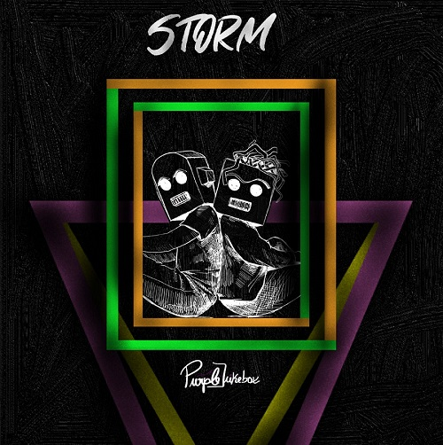

O CD STORM, criado pelos Purple Jukebox, acompanha o livro Depois da Tempestade, escrito pelo Miguel Aleixo. O CD é constituído por 10 músicas que acompanham cada capítulo do livro e uma música bónus que acompanha a introdução do livro. O leitor/ouvinte de Storm: Depois da Tempestade é convidado a ouvir a música que está indicada em cada capítulo.
My light’s evading me
I guess I was made this way
They stand alone in life
And together in death
The words they say
Devoid of sense
They look so alive
Yet I can’t see my reflection
Oh why?
(Who am I?)
I’ve lost my innocence as I fell down
I wasted my words
On the undeserving ones
My soul was shattered
And now
It all moves out of time
Who am I?
I’ll chase them with flowers
I’ll chase them with stones
Embraced by your shadow
To find my own
I see your dreams
And I wonder
How can I fly again
If I lost my wings?
Who am I?
I’ve lost my innocence as I fell down
I wasted my words
On the undeserving ones
My soul was shattered
And now
It all moves out of time
Who am I?
Deserted Town representa a essência vermelha.
I've been crying for so long
And for every tear
I feel the pain growing on me
All my life
I run away from humanity
Stop running! It's time to face them
Can you see the clock running?
Am I dreaming?
I am not dreaming!
You make me feel things from the past
This can’t be real!
I am real buddy
What can you show me?
I am robot with no soul
I lost my mind there
When I saw all the things
That I cannot forget
Now! Free myself now!
Free yourself now!
Free myself now
To see the world where you can live!
The world is yours to win
Just trust me
See everything you can be!
I am a book
I have power
I have knowledge
I can be the world!
You can see different things
You can say different words
You can change your past
And create great memories
You have powers that you don’t know
Am I dreaming?
I am not dreaming!
You make me feel things from the past
This can’t be real!
What can you show me?
I am robot with no soul
I lost my mind there
When I saw all the things
That I cannot forget
Now! Free myself now!
Free yourself now!
Free myself now
To see the world where you can live!
The Rhythm of Life is every living sound
Healing frequencies
Lift us from the ground
Concentrate, feel the vibrations
Inhale and exhale
Simple you can breathe it
If you can hear it
You can feel it
If you can feel it
You can hear it
Waves of pure energy exploding inside
While the flow of your blood cannot hide
The spirits crying, repeated, so repeated
Keep it simple
Carry the beating
Embrace all the light
Another voice screams in my head
Those days won't come back
All I want
I want to live them again
Angel
Follow this verse
It is for you
You tell me to choose the childhood
But I don’t know if I can save him
And tell me
Are we still on time?
And I lay on the floor
With a bottle and some sketches
I cry a bit
The pain is already spread
When I think about you
All the tears go away
Another voice screams in my head
Those days won't come back
All I want
I want to live them again
So Devil
This is for you
You make me choose love
And I know I will not resist
I think this is going wrong
And I lay on the floor
With a bottle and some sketches
I cry a bit
The pain is already spread
When I think about you
All the tears go away
When my journey began
People I met disappeared forever
Those places are just in my head
Maybe one day I'll be back
I see all these faces
When they looked at me
In my chest I feel their sadness
It’s like mine
It's completely different
This street I chase is full of empty spaces
I collect all hopes to be brave
But on this garden bench
I am so alone
I am so alone
I saw all the photos on the floor
I burned most
They are just memories
To touch them
To feel them
I want to go back in time
I am so alone
Frustração. A música “Save Yourself” remete-nos para a viagem no tempo do Rom. A sua vibe é demonstrada na frase ”sometimes I get crazy". O final da música é marcado por um rasto de “desconfiguração”, consoante acontece na narrativa.
Essencia Amarela. Representa a jornada em que Rom descobre um novo poder!
All my life I've lived among the shadows
I've grown with them
I have never been in ecstasy except when
Except when I was with you
You think that I am strong
I think that you are wrong
You failed to see my tears whenever I was
blue
All these flowers and none shines just like
you
My heart is purple and only shines for you
And that’s why I feel so blessed
To be free
To be me
To turn around and let it round
But tell me Darling
What would you leave to love a man?
A man who dances like a robot
A man who loves like a robot
And worst he doesn't know how to cook
We dance (We dance)
We cry (We cry)
We sing (We sing)
We fall (we fall)
And that's what we take from this world
You lost your soul
You lost your way
Let’s enjoy the time together
It won’t last forever
I wish I could tell you everything
But I feel so scared
You have a rebel soul
It makes me be in ecstasy
You are a silly robot (man)
I've learned how to let go
All my doubts and my fears
I face them
You lost your soul
You lost your way
Let’s enjoy the time together
It won’t last forever
To be free
To be me
To turn around and let it round
But tell me Darling
What would you leave to love a man
A man who dances like a robot
A man who loves lik
We cry (We drink)
We sing (We drink)
We fall (we drink)
And that's what we take from this world
Momento de relexão do leitor/ouvinte.
Solidão. Rom está perdido. Sozinho. Apesar de ter todos os humanos a passar à sua volta, sente-se deslocado do mundo.